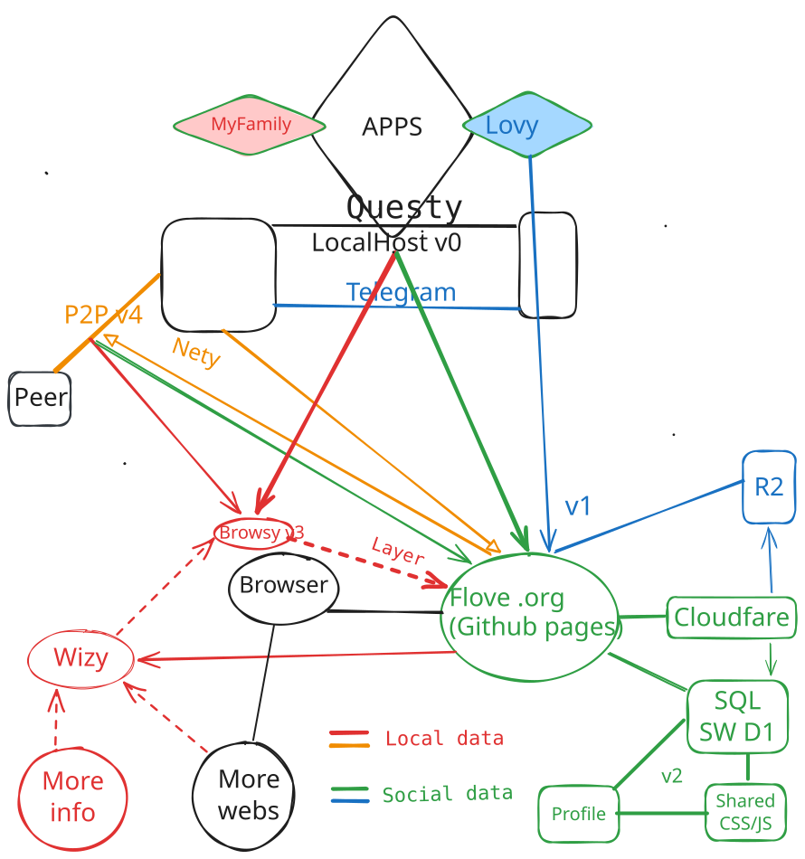
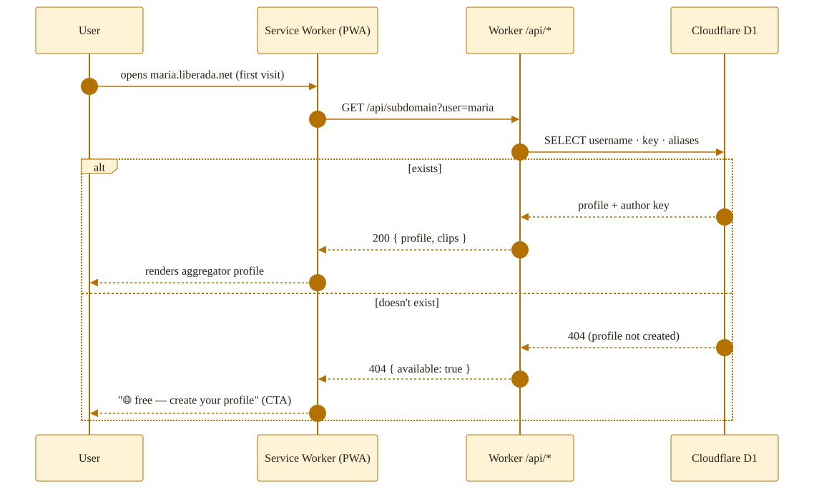
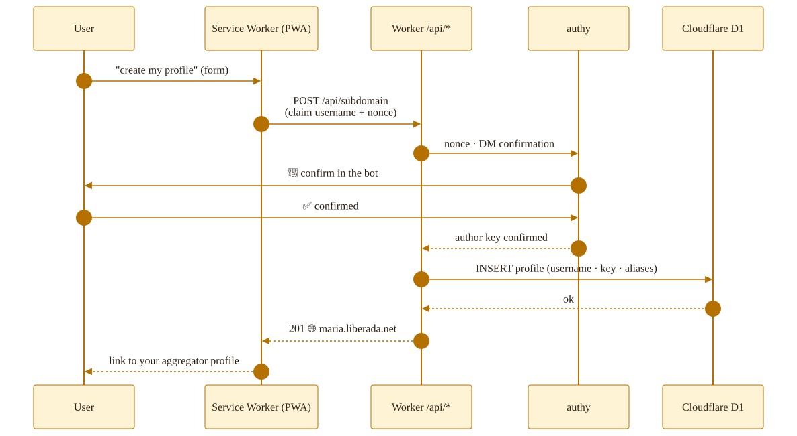

pendings.md ↗
Punteros numerados desde los docs y el archivo de decisiones cerradas.Numbered pointers from the docs, plus the archive of resolved decisions.
- Pending items
- Resolved (archived)
Real case: tools/routing.json names every app, its category and its field tree in one schema — Goddy's rated rows, Raty's words and Wizy's suggestions all speak that same vocabulary, so a new app only declares which words it uses.
Real case: apps/economy/dealy/dealy-mini.html carries its CSS, its JS and its flove-fields manifest in one file — it opens from a USB stick, a Pages URL or a phone, and a bug is fixed by regenerating that single file.
Real case: Sensy keeps your answers in localStorage and exports them as sensy-portrait.json; the file stays on the device until you press Share, and the same JSON imports into Appy on any other device.
Authy authenticates Telegram. Telegram enables MyNet. MyNet uses the MyFamily profile. Browsy manages your closest Wizy pull-pushes that Wizy also pulls public flove through Nety, finally offering a rich custom suggestion on demand.


| §13.18 section | 4 · Function | 5 · Craft | apps with evidence | gap noted |
|---|---|---|---|---|
| Identity & tokens | ✓ | + | ||
| Self-contained | ✓ | ✓ | ||
| Persistence | + | + | ||
| Menu | + | + | ||
| Tour | + | + | ||
| Metadata | + | + | ||
| Stats | + | + | ||
| Summary | ✓ | + | ||
| Export/share | + | + | ||
| Forms | + | + | ||
| Theme | + | + | ||
| Language | + | + | ||
| States | + | + | ||
| Navigation | ✓ | + | ||
| Compass | + | + | ||
| Counters | ✓ | + | ||
| Publish (database) | ✓ | + | ||
| Locking / tiers | — | + |
Los paneles Plan y Work de Docs son la superficie canónica: seis ejes organizan hitos y tareas. Los Markdown y el wiki aportan el detalle y sirven de fallback; no duplican filas.Docs · Plan and Work are the canonical surface: six axes organize milestones and tasks. The Markdown files and the wiki hold the detail and act as fallback; they add no duplicate rows.
Punteros numerados desde los docs y el archivo de decisiones cerradas.Numbered pointers from the docs, plus the archive of resolved decisions.
Planes de implementación, hoja de ruta y pulido del trunk.Implementation plans, roadmap at a glance and trunk polish.
Tensiones entre planes, clústeres coherentes y resoluciones.Cross-plan tensions, coherent clusters and resolutions.
Índice canónico de los archivos de debates/, agrupados por carpeta y con su ruta absoluta en flove.org. Desde Docs · Plan se enlaza aquí; los paneles Plan y Work son la superficie canónica.Canonical index of the debates/ files, grouped by folder with their absolute flove.org route. Docs · Plan links here; the Plan and Work panels are the canonical surface.
El otro grupo: lo estándar. Una cosa es estándar o está en los documentos de trabajo; proposals.md era vago y se retira de aquí.The other group: what is standard. A thing is either standard or in the working documents; proposals.md was vague and is retired here.
El detalle vive en el wiki (docsify). Dos plugins: editar en interfaz y habilitar enlaces # de cabecera.The detail lives in the wiki (docsify). Two plugins: edit in the interface and enable # heading links.
docsify-edit ↗ — editar en interfazedit in the interfacedocsifySectionAnchors — enlaces # de cabecera# heading linksFuente única · sin taxonomía propiaSingle source · no taxonomy of its own
El resumen de cada app produce un JSON; Appy lo valida y lo guarda en flove:appy:plays. routing.json es el catálogo que une ambos lados. Wizy es el conector inteligente de tu mundo privado con lo público.Each app's summary produces a JSON; Appy validates it and keeps it in flove:appy:plays. routing.json is the catalogue that joins both sides. Wizy is the smart connector between your private world and the public one.
The envelope every flove app exports — flove-portrait/1, flove-profile and flove-routing/3.
The backbone checker that keeps manifests, routing and Appy's snapshot aligned.
The same engine as your fine-tuned flove agent, run from the prompt you share.
AI codes semi-freely — bugs there don't matter, because everything is simplified to a JSON file that anyone hosts anywhere they like. And an AI (Wizy, a flove fine-tuner) working offline in your device later networks the more private flove data — kept in your device — with the more social one, shared by you and others, to provide suggestions that can be fully processed and seen offline by just you.
Inside· orange12 apps
Mating· yellow9 apps
Linguistics· green15 apps
Economy· indigo9 apps
Runtime smoke: conformance.html loads each app in an iframe and checks its flovePortrait API. Serve it over HTTP.Humo en ejecución: conformance.html carga cada app en un iframe y comprueba su API flovePortrait. Sírvelo por HTTP.
| App | Field | Type | Path |
|---|---|---|---|
Realy |
Biology | standard | apps/psychosocial/realy.html |
Crafty |
Economy | standard | apps/economy/crafty.html |
Freed |
Economy | standard | apps/economy/dealy/freed.html |
Inventary |
Economy | standard | apps/economy/dealy/inventary.html |
Lowy |
Economy | standard | apps/economy/lowy.html |
Minioffer |
Economy | standard | apps/economy/dealy/dealy-mini.html |
Wanty |
Economy | standard | apps/economy/dealy/wanty.html |
Cathy |
Inside | standard | apps/metas/moraly.html |
Lovy |
Inside | standard | apps/psychosocial/lovy.html |
Sensy |
Inside | standard | apps/bio/sensy.html |
Comby |
Ling | standard | apps/puzzy/comby.html |
Confluenty |
Ling | standard | apps/puzzy/confluenty.html |
Fivy |
Ling | standard | apps/puzzy/fivy.html |
Linky |
Ling | standard | apps/puzzy/linky.html |
Poly |
Ling | standard | apps/puzzy/poly.html |
Raty |
Ling | standard | apps/puzzy/raty.html |
Wisy |
Ling | standard | apps/puzzy/wisy.html |
Crumbly |
Mating | standard | apps/trusty/crumbly.html |
Daty |
Mating | standard | apps/trusty/daty.html |
Evily |
Mating | standard | apps/trusty/evily.html |
Maty |
Mating | standard | apps/trusty/maty.html |
MyFamily |
Mating | standard | apps/trusty/myfamily.html |
Parenty |
Mating | standard | apps/trusty/parenty.html |
Trusty |
Mating | standard | apps/trusty/trusty.html |
Varyy |
Mating | standard | apps/bio/varyy.html |
Astry |
Metaphysics | standard | apps/psychosocial/astry.html |
Goddy |
Metaphysics | standard | apps/metas/goddy.html |
Willy |
Metaphysics | standard | apps/metas/willy.html |
DieSafe |
Psychology | standard | apps/bio/diesafe.html |
Hacky |
Psychology | standard | apps/psychosocial/hacky.html |
PracSys |
Psychology | standard | apps/bio/pracsys.html |
Souls |
Psychology | standard | apps/metas/souls.html |
Shareful |
Social | standard | apps/economy/dealy/shary.html |
Socy |
Social | standard | apps/psychosocial/socy.html |
Dealy |
Economy | standard | apps/economy/dealy/index.html |
Rewardy |
Economy | demo | apps/economy/dealy/rewardy.html |
Worthing |
Economy | standard | apps/economy/worthing.html |
Keys |
Ling | standard | apps/puzzy/keys/keys-advanced.html |
Loly |
Ling | standard | projects/liberada/risa/index.html |
Appy |
Profile | standard | apps/appy/index.html |
Blogy |
Social | demo | apps/blogy/index.html |
Apps |
Apps | launcher | apps/index.html |
Sys |
Sys | backend | apps/sys/index.html |
Central |
Central | backend | apps/sys/central/index.html |
Bio |
Bio | launcher | apps/bio/index.html |
Blogy |
Blogy | launcher | apps/blogy/index.html |
Economy |
Economy | launcher | apps/economy/index.html |
Language |
Language | launcher | apps/language/index.html |
Puzzy |
Ling | launcher | apps/puzzy/index.html |
Chacrikun |
Linguistics | music | chacrikun/index.html |
ElectrOrchestra |
Linguistics | music | electrorchestra/index.html |
Frotis |
Linguistics | music | frotis/index.html |
Futbolia |
Music | music | projects/futbolia/index.html |
Mating |
Mating | launcher | apps/mating/index.html |
Metas |
Metas | launcher | apps/metas/index.html |
Psychosocial |
Psychosocial | launcher | apps/psychosocial/index.html |
Community |
Social | page | community/index.html |
Trusty |
Trusty | launcher | apps/trusty/index.html |
Profily |
Inside | demo | apps/appy/profily.html |
Sety |
Ling | backend | apps/sys/sety/index.html |
Vizy |
Ling | demo | apps/puzzy/dev/vizy.html |
Vizy2 |
Ling | demo | apps/puzzy/dev/vizy2.html |
Fity |
Ling | page | apps/bio/fity.html |
Browsy |
Social | backend | apps/sys/browsy/index.html |
Nety |
Social | backend | apps/sys/nety/index.html |
Wizy |
Social | backend | apps/sys/wizy/index.html |
backy |
Skills | skill · sys | development/standards/skills/backy/SKILL.md |
blogy |
Skills | skill · authoring | development/standards/skills/blogy/SKILL.md |
brandy |
Skills | skill · authoring | development/standards/skills/brandy/SKILL.md |
diagramy |
Skills | skill · authoring | development/standards/skills/diagramy/SKILL.md |
exporty |
Skills | skill · sys | development/standards/skills/exporty/SKILL.md |
jsony |
Skills | skill · sys | development/standards/skills/jsony/index.html |
narraty |
Skills | skill · authoring | development/standards/skills/narraty/SKILL.md |
optimizy |
Skills | skill · sys | development/standards/skills/optimizy/SKILL.md |
questy |
Skills | skill · planning | development/standards/skills/questy/index.html |
questy-all |
Skills | skill · planning | development/standards/skills/questy-all/SKILL.md |
questy-flove |
Skills | skill · planning | development/standards/skills/questy-flove/index.html |
questy-html |
Skills | skill · planning | development/standards/skills/questy-html/index.html |
skilly |
Skills | skill · sys | development/standards/skills/skilly/SKILL.md |
texty |
Skills | skill · sys | development/standards/skills/texty/SKILL.md |
translaty |
Skills | skill · sys | development/standards/skills/translaty/SKILL.md |
jev |
Skills | skill · utility | development/standards/skills/jev/SKILL.md |
tasky |
Skills | skill · utility | development/standards/skills/tasky/SKILL.md |
updaty-apk |
Skills | skill · utility | development/standards/skills/updaty-apk/SKILL.md |
updaty |
Skills | skill · utility | development/standards/skills/updaty/SKILL.md |
validaty |
Skills | skill · sys | development/standards/skills/validaty/SKILL.md |
Ama |
Liberada | project | projects/liberada/ama/index.html |
Fuga |
Liberada | project page | projects/liberada/fuga/index.html |
Liberada.net |
Liberada | project | projects/liberada/liberada.net/index.html |
Risa |
Liberada | project | projects/liberada/risa/index.html |
LowAI |
LowAI | project page | projects/lowai/index.html |
Chatland |
Projects | project | projects/chatland/index.html |
One ladder for every text skill. texty3 and translaty3 run levels 1–3 and stop; the number is also the stop point. Names are level 3, JSON values level 4, and contracts stay read-only at 5.
| Level | Name | What it covers | Commands |
|---|---|---|---|
| 1 | Surface | Every string the reader sees: headings, prose, buttons, hints, empty and error states, text read aloud. | texty1 · translaty1 |
| 2 | Labels | Metadata and field labels: <title>, description, aria-label, title, placeholder, field labels, data-aria-* / data-ph-*, i18n display values. | texty2 · translaty2 |
| 3 | Names | Internal names: classes, ids, JS identifiers, data and i18n keys. Rename or translate their display values; never the keys. | texty3 · translaty3 |
| 4 | Data | Display values inside manifests and envelopes: flove-fields, routing descriptions and tags, flove-portrait values, i18n tables. Keys stay untouched. | texty4 · translaty4 |
| 5 | Contracts | Canonical identifiers and contracts: routing.json, flove-fields, the export schema, routes and enum names. Read-only for text and translation. | texty5 · translaty5 |
Skills: texty · translaty. Translaty keeps its own engine and follows the same 1–5 stop points. Brandy has its own five stages: brandy4 runs stages 1–4.
↕ Click the map to expand / collapse
↕ Click the diagram to extend / collapse the checks
Gestiona tu identidad pública: nombre, @ y subdominio bajo tu clave. Agrega todo lo que publicas y compartes — risas, playlists y favoritos — en un solo perfil. Solo lectura por defecto: tus datos siguen privados hasta que decidas compartirlos.Manage your public identity: public name, handle and subdomain under your key. Aggregate everything you publish and share — risas, playlists and favourites — in one profile. Default read & play only: your data stays private until you decide to share it.
El desarrollo continua con estas mejoras:Development continues with these improvements:



Risa es autosuficiente: la web carga siempre su propio risa.json. Después, y solo después, hace una llamada opcional a flove.json que enriquece cuando responde y calla cuando no:Risa is self-sufficient: the web always loads its own risa.json. After — and only after — it makes an optional call to flove.json that enriches when it answers and stays quiet when it doesn't:
flove.json falla (404, timeout, CORS), la web queda exactamente igual: sin enlaces, sin esperas, sin bloquear el feed.Progressive, fail-silent enrichment. If flove.json fails (404, timeout, CORS), the web stays exactly as is: no links, no waits, no blocking the feed.risa.json es la verdad del feed; flove.json solo añade. Nunca al revés.Golden rule. risa.json is the feed's truth; flove.json only adds. Never the other way round.flove.org/users/<key>/): ahí ves tus risas y al lado puedes activar Lovy ya autenticado — mismo authy, sin volver a loguearte.On claim (authy). Your claimed word becomes a link to flove's single profile (flove.org/users/<key>/): there you see your risas and, next to it, you can enable Lovy already authenticated — same authy, no need to log in again.El feed risa.json es la capa de datos compartida. La capa de código se resolvió por autosuficiencia: cada app inlinea su CSS/JS y addons/code/ es solo una copia de referencia — sin loader ni src= externo.The risa.json feed is the shared data layer. The code layer was settled by self-sufficiency: every app inlines its CSS/JS and addons/code/ is a reference copy only — no loader, no external src=.
floatChips viven inline en cada app; addons/code/ es la copia de referencia para copiar, no un runtime compartido.Same skeleton, same voice. Playlists and floatChips live inline in each app; addons/code/ is the reference copy to copy from, not a shared runtime.floatChips, las chips que ya flotan en esta web flotan igual en todas.No external enrichment. There is no library that can fail (file://, network, failure): every app carries its inline copy. Combined with floatChips, the chips that already float on this web float the same on all of them.El perfil público (identidad, @, subdominio, agregación y privacidad) sigue en diseño. El plan vivo está en el documento de la escalera de navegación de Profily.The public profile (identity, handle, subdomain, aggregation and privacy) is still in design. The living plan sits in the Profily navigation-ladder document.
/updatyN runs levels 1 → N and stops; with no number the level is picked from the tree and the request. Skill: updaty.
| Level | Name | What it runs | Stops before |
|---|---|---|---|
| 1 | Gate | Read-only sweep: distro, routing, jsony, a11y, depth/worldview drift. Reports warnings and stops on a hard error. | any write |
| 2 | Commit | Stages the named source paths only and commits them. | push |
| 3 | Publish main | Pushes and publishes only the paths that changed. | rebuilt artifacts |
| 4 | Heavy + publish | Adds the sync, sw.js, the zip and local/Gitea GC, then publishes once. | subdomains |
| 5 | Full release | Adds the subdomains; the APK is a separate updaty-apk run. | — |
Auto-pick: dirty tree → 1 · clean + commit → 2 · publish → 3 · upgrade → 4 · full release → 5. The run reports the level used and the next one.
From frontend §13.18: level 3 is the minimum, 4 adds function, 5 is craft. ✓ shipped in the apps that have the section · + planned or partial · — not required at that level.
| Section | 4 · Function | ✓ / + | 5 · Craft | ✓ / + |
|---|---|---|---|---|
| Identity & tokens | Per-app accent/ink harmony; same tokens in icons and exports | ✓ | Elevation, texture and motion tuned per surface without a new language | + |
| Self-contained | Install/PWA where claimed; cached shell; no blocked first paint | ✓ | Offline recovery and background refresh where the app needs it | ✓ |
| Persistence | Draft/autosave and undo for long forms; export before a destructive reset | + | Versioned migration and a backup/restore path | + |
| Menu | About · Language · Theme · Tour present; related apps listed | + | Collapse/expand the bar, search row at advanced+, state remembered | + |
| Tour | Skip and resume; remembers “seen”; every slide deep-linkable | + | Contextual entry from each section; updates with new features; reduced-motion safe | + |
| Metadata | OG image/card; canonical URL; slogan and about match flove-fields | + | Share preview tested; localized metadata; no stale title | + |
| Stats | Per-section breakdown, one insight, counters and checks; offline | + | Trends and comparisons; export or clear per section; privacy statement in the app | + |
| Summary | Portrait export; re-entry; copy and share | ✓ | Live preview, undo, jump to the section that needs attention | + |
| Export/share | Import round-trip; native share; stable filename and date | + | QR/link, schema version, recovery from a failed import | + |
| Forms | Validate on blur; draft/autosave; undo | + | Inline help, smart defaults, progress, no data loss offline | + |
| Theme | Respects the system theme; no flash; contrast proven in both | + | Accent harmony; images and illustrations adapt to the ground | + |
| Language | Fallback chain; metadata localized; RTL-ready where needed | + | Per-app memory; language in share links; typography per locale | + |
| States | Retry and recovery; offline notice; no layout shift | + | Skeleton/optimistic UI; reduced-motion variants; graceful degradation | + |
| Navigation | History, tabs and compass where the app has them; position remembered | ✓ | Transitions, restored scroll, shareable state | + |
| Compass | Present where several views; keyboard reachable; no focus trap | + | Remembers the last view; re-presents without reload; shares state | + |
| Counters | Floating chips labeled, local, never gate content | ✓ | Trends and insights; per-counter reset; reduced-motion safe | + |
| Publish (database) | Share → Appy hand-off works; record valid and re-openable | ✓ | Auto-render and import round-trip; clear failure recovery | + |
| Locking / tiers | — | — | Gates explained, keyboard reachable, no dead end, clear upgrade path | + |
.zipDesktop · .zipDescarga y ejecuta START-FLOVE en local.Download and run START-FLOVE locally.
Descarga flove-localhost.zip, descomprime y ejecuta START-FLOVE-<os> (sirve flove-localhost/ en localhost:8642).Download flove-localhost.zip, unzip it and run START-FLOVE-<os> (it serves flove-localhost/ on localhost:8642).
Directo en el móvil — offline, sin red.Straight on the phone — offline, no network.
Ejecútalo directo en el móvil en Termux (offline, sin red) con el comando de instalación-y-servido de la home.Run it straight on your phone in Termux (offline, no network) with the install-and-serve command from the home page.
Alcanza la instancia desde otro dispositivo.Reach the instance from another device.
Alcanza la instancia en marcha desde otro dispositivo — mismo Wi-Fi, o por Tailscale desde cualquier red vía HTTPS.Reach the running instance from another device — same Wi-Fi, or over Tailscale from any network via HTTPS.
.aabAndroid app .aabEl TWA listo, publicado en GitHub Releases.The ready-made TWA, published on GitHub Releases.
La app Android lista (sin Termux): el TWA en tools/flove-apk/, publicado en GitHub Releases como flove.aab.The ready Android app (no Termux): the TWA in tools/flove-apk/, published on GitHub Releases as flove.aab.
Todo empieza en un commit: cada cambio que toca apps/ se versiona, y el hook post-commit apunta las rutas en tools/jsony-state.json para que jsony las revise.Everything starts in a commit: every change touching apps/ is versioned, and the post-commit hook queues the paths in tools/jsony-state.json so jsony can review them.
updaty es una sola escalera: en nivel 3 publica la web; en nivel 4 reconstruye paquetes, regenera sw.js, sincroniza el vocabulario y publica; en nivel 5 los subdominios.updaty is one ladder: level 3 publishes the site; level 4 rebuilds packages, regenerates sw.js, syncs the vocabulary and publishes; level 5 the subdomains.
flove-localhost.zip viaja desde flove.org y también queda adjunto a GitHub Releases; el APK/AAB se publica en Releases y el TWA se reconstruye solo cuando cambia el manifest.flove-localhost.zip travels from flove.org and is attached to GitHub Releases too; the APK/AAB ships in Releases, and the TWA rebuilds only when the manifest changes.
Cada app embebe su manifiesto flove-fields; tools/extract-fields.py --apply los recoge en tools/routing.json (esquema flove-routing/3: apps, árbol de campos y categoría). --check bloquea cualquier deriva.Each app embeds its own flove-fields manifest; tools/extract-fields.py --apply gathers them into tools/routing.json (schema flove-routing/3: apps, field tree and category). --check blocks any drift.
El hook post-commit encola las rutas que tocan apps/; jsony_check.py --changed compara manifiestos, routing y el snapshot APP_ROUTING de Appy, y deja la deriva en tools/jsony-pending.{md,json} para revisar. Nunca edita el backbone en silencio.The post-commit hook queues the paths touching apps/; jsony_check.py --changed compares manifests, routing and Appy's APP_ROUTING snapshot, and leaves any drift in tools/jsony-pending.{md,json} for review. It never edits the backbone silently.
Un bot de Telegram recoge notas de voz, un grupo humano modera, y todo lo aprobado acaba como MP3 en Cloudflare R2 con su entrada en risa.json; la web lee el feed, lo anida y enriquece su entorno para reproducirlo en diversas listas (tags y perfil) y poder contestar a el, con un clip nuevo o solapado al citado.A Telegram bot collects voice notes, a human group moderates, and everything approved ends up as an MP3 on Cloudflare R2 with its entry in risa.json; the web reads the feed, nests it and enriches its surroundings to play it in several lists (tags and profile) and to reply to it — with a new clip or one overlapped on the quoted one.



risa.json y la web, todo en un solo repo.Public repository — code, the risa.json feed and the web, all in a single repo.La v1 ya trae esto funcionando, feature a feature, y cada pieza está escrita para una sola cosa: sin build, sin servidor y sin coste. Lo que queda se vive en la pestaña Desarrollo (v2).The v1 already ships this working, feature by feature, and each piece is written for a single purpose: no build, no server, no cost. What remains lives in the Develop tab (v2).
risa.json) como fuente de verdad de la webA single feed (risa.json) as the web's source of truthfloatChips)Floating tag cloud with collisions avoided (floatChips)#/u/<key> con su propio feedAuthor page #/u/<key> with its own feedparent) con conectores visuales y etiqueta del autor respondidoThreads: infinite reply chains (parent) with visual connectors and replied-author labelusername.liberada.net solo con «Sí, quiero» tras publicar (nunca automático)Opt-in author subdomain: username.liberada.net only with "Yes, I want it" after publishing (never automatic)liberada.net/usa/<username>/ unifica risas + amasGeneric aggregator profile: liberada.net/usa/<username>/ unifies risas + amast.me/RisaLiberadaBot para escanearQR of the t.me/RisaLiberadaBot deep link to scangetUpdates (ni pérdidas ni duplicados)Persisted offset and idempotency in getUpdates (no losses, no duplicates)@username)Stable handle from word + salted hash (never @username)parentForward from the channel → chain: detects the forward, proposes a reply, publishes with parenthasAncestor() impide A→B→…→ACycle detected: hasAncestor() prevents A→B→…→AffmpegNormalisation to MP3 with ffmpegrisa.json (git como base de datos)The approved piece prepends to risa.json (git as database)parseUpdates es una función puraMalformed messages never crash the loop: parseUpdates is a pure functionmigrate-r2.mjs y sync-media.mjsMaintenance scripts: migrate-r2.mjs and sync-media.mjs/me · /stats · /profile · /status · /queueBase: /me · /stats · /profile · /status · /queue/latest · /random · /now · /since · /today · /trendingExplore: /latest · /random · /now · /since · /today · /trending/play (recorre el feed, el mismo que la web)Playback: /play (walks the feed, the same one as the web)/entrar (miniapp) · /mejorar (novedades) · /name (nombre público) · /usuario (subdominio) · /pub (mostrar @)Profile: /entrar (miniapp) · /mejorar (what's new) · /name (public name) · /usuario (subdomain) · /pub (show @)#/u/<key> automáticamenteEvery publication generates its #/u/<key> tag-url automaticallytimeAgo)Avatar with initial and relative date (timeAgo)risa.json versionado: id, t, name, tags, src, when, tg, keyVersioned risa.json schema: id, t, name, tags, src, when, tg, key{flag, clips}Backwards compatible: the feed can be an array (v1) or an object {flag, clips}flove.json se ignoranContract guardrails: unknown flove.json keys are ignoredflove.json enriquece sin interrumpir: timeout de 4 s y fail-silentflove.json enhances without interrupting: 4 s timeout and fail-silentrisa.json es la verdad; flove.json solo añade, nunca al revésGolden rule: risa.json is the truth; flove.json only adds, never the other way roundmigrate-r2.mjsPrefix migration and URL rewriting ready in migrate-r2.mjssync-media.mjs (idempotente)Media synced to R2 with sync-media.mjs (idempotent)node --test: 91 verdes sobre la lógica del bot y de la webnode --test test suite: 91 green on the bot and web logicrisa.js corre igual en la web y en NodeShared pure helpers: risa.js runs the same in the web and in Nodenode --check en todos los archivosnode --check syntax check on every fileplan-v2.md del estándarv2 plan centralised in the standard's plan-v2.mdprefers-reduced-motion respetado (animaciones off)prefers-reduced-motion respected (animations off)aria-label y roles en los controles importantesaria-label and roles on the important controlsalt descriptivo en todas las imágenesDescriptive alt on all imagesloading="lazy") de imágenesLazy loading (loading="lazy") of imagespreload="none" (no descarga hasta reproducir)Audio with preload="none" (no download until playback)Código abierto, sin servidor, sin coste. Clona el repo, lanza tu bot y empieza a publicar risas en una tarde.Open source, no server, no cost. Clone the repo, launch your bot and start publishing risas in an afternoon.
La versión mini: un único prompt que convierte a un agente (IA) en el encargado de montar todo el sistema en tu proyecto. Cópialo, pégaselo y supervisa el resultado.The mini version: a single prompt that turns an AI agent into the one in charge of building the whole system in your project. Copy it, paste it to the agent and supervise the result.
Rol: asiste a montar el proyecto «mi proyecto», inspirándote en el proyecto libre github.com/floveorg/risa. Objetivo: sistema completo — subida de audio · vídeo por Telegram → moderación → publicación en canal + feed web. Sin servidor propio. Datos: - Bot: @TuBot — cron Actions 5–10 min - Contenido: audio · vídeo - Feed: risa.json · newest-first - Campos por pieza: título · etiquetas · autor. Requisitos (release completa): piezas ≤ 1 min · ≤ 10 MB · máx. 5 en cola y 5 al día · CC BY-SA 4.0 («Enviar = consentir», tag «libre») · página de autor #/u/<key> con feed propio · comandos de solo lectura /me · /stats · /profile · /status · /queue · /latest · /now · /today · /since · /random · /trending · /play · etiquetas → chips · búsqueda · favoritos (filtro local) · entrada por deep link + QR · repo dedicado con Pages · feed risa.json newest-first. Pasos: 1. Clona el repo de referencia; estudia bot/, index.html, risa.json y .github/workflows. 2. Pide y valida los secretos (BOT_TOKEN, CHANNEL_ID, MOD_GROUP_ID, credenciales R2) antes de usarlos. 3. Configura GitHub Actions como cron que llame a getUpdates cada 5–10 minutos. 4. Monta el feed risa.json y la web en GitHub Pages. 5. Verifica de punta a punta con una prueba real de audio · vídeo. Permisos: leer/escribir el repo del proyecto, instalar dependencias de Node, desplegar Pages y Actions. Nada fuera del repo; confirma antes de crear credenciales. Restricciones: sin servidor ni base de datos propios; piezas gratuitas (R2, Pages, Actions); respeta la privacidad (nunca guardar ids de Telegram en claro). Responde en español.
A new messenger surface is being designed. This tab will hold its plan and demo when it lands.
Browsy v3, la extensión que da identidad y confianza, y Nety v4, Red P2P y computación distribuida.Browsy v3, the extension that gives identity and trust, and Nety v4, a P2P network and distributed computing.
tweetnacl como fallback), menús de contexto, badge y mirror de ajustes.background.js — generates ed25519 keys (Web Crypto, tweetnacl as a fallback), context menus, badge and settings mirror.chrome.storage.local para el núcleo y chrome.storage.sync para ajustes; sync unidireccional Browsy → central.Storage — chrome.storage.local for the core and chrome.storage.sync for settings; one-way sync Browsy → central.lib/crypto.js y lib/store.js son los puntos que nety reutilizará.Plug-in ready — lib/crypto.js and lib/store.js are the points nety will reuse.scheduler hace matching + placement y la reputación CRDT + WoT de 2º orden decide la confianza.Nety v4 flow: the gateway mediates between the app and the libp2p network; nodes announce roles, the scheduler does matching + placement and the CRDT + 2nd-order WoT reputation decides trust.InMemoryStore y SocialStore está creado pero sin enlazar.Current state — daemon and gateway do not talk yet (no bootstrap/mDNS); the gateway uses InMemoryStore and SocialStore exists but is not wired.lib/crypto.js y lib/store.js.The bridge (port-nety): everything Browsy stores and signs locally today moves to the network in Nety — the same DNA, plug-in ready via lib/crypto.js and lib/store.js.The local/central agent that reads your portraits and helps you act on them. Open Wizy →
Friend-to-friend groupware and distributed space, v4 of the P2P path. Open Nety →
Tus datos se insertan solos en el prompt de «Agentes», en la introducción. Cambia lo que quieras y pulsa «Generar prompt».Your data is inserted on its own into the "Agents" prompt, in the introduction. Change whatever you want and press "Generate prompt".
Conoce los estándares y planes del backend de FLOVE en esta página. Complementa tu visión con otras páginas de FLOVE relacionadas.Know FLOVE backend standards and plans in this page. Complement your view with other related FLOVE pages.